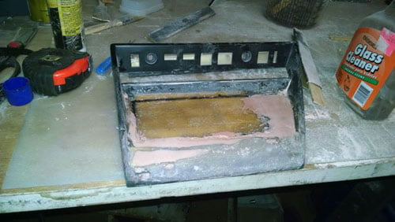

-
Going to let this out since I have been seeing others on Facebook do the same.
A While ago I purchased a Pioneer FH-X700BT for my 96 Toyota Camry that has since been scrapped and since I needed a headunit for the Z and I liked the features the unit offered, I figured why not try to install it in the factory location. With this I started to measure things and as everyone knows, The Z31 has an odd Din and a half footprint for the stock unit. I do a little more measuring and since I don't use the ashtray at all other than for junk, I figure I can do away with it and modify the bezel to make the head unit fit.
I first start by taking my spare bezel and the radio mount out of the dash and trim the bottom of the mount to make room for the Double Din unit. Sorry I don't have any Pictures of this process.
Once trimmed I start on the bezel. I first trim down about half way through the ash tray opening and follow the cut over to the Lighter socket. After doing this I realize I am going to be filling these areas in with Fiberglass anyway so I do more cutting all the way over to the angled side of the bezel. I also cut the whole area above it to the cross bar that is between the radio and the AC controls. This leaves a huge hole in the bezel that will be filled in with Fiberglass.
Once the hole is totally cut I start building the area up by first using balsa wood strips to lay a foundation on the back side and give the part some strength. I fill the whole area cutting the angle on the right side to match the bezel. Once the pieces are in place I cover them with a layer of Resin and chopped mat to cover the whole area. You need to lay between 3-4 layers of chopped mat between the resin to build the part up with enough strength that it won't crack. This also will hold the metal frame of the bezel in place as the small plastic tabs like to break loose.
Once the glass dries you can then start on the front face. Because the glass is dry on the back side holding everything in place you can now get the nice sharp edges you need on the front side. You want to cut your chopped mat in the shape of the bezel so you don't have to cut alot of fiber glass out when making your holes. Lay a layer of Resin down on the bezel and then place the mat into the resin soaking it throughout. Repeat this alternating the mat direction. this makes a nice strong bond that won't crack. Once you have your mat and resin laid, Let is harden over night. The next part is where we give it shape.
Now that the fiberglass is laid and is hardened you can start to shape it using Sand paper on a sanding stick or a paint stick will also work. I started with 60 grit to get the shape quickly but be careful not to go through the glass all the way or you will need to add more. Sand the high spots until you get the are nice and smooth and level all over the bezel. It's not hard to do but does take time to get perfect.
After you get all of your high spots smooth you can tackle any low spots with more Glass and resin. Repeat until you have the surface the shape you want.
Next you want to tackle the imperfections in the glass that you will have with body filler. You don't need much but some is needed to fill the pin holes you will usually get in the fiberglass/resin. Mix your filler to the Specs from the manufacture and spread thin coats over the part.

Once you have the filler on sand it smooth again increasing your sand paper grit. I used 60-100-150-220.
Now that the part is shaped and smooth you can measure and cut your holes for the unit and any accessories you wish to keep. I moved the lighter socket to the unused space to the right of the head unit so I can plug in my cell phone charger.

Now that you have your holes cut, test fit all parts before painting.
Next Disassemble the bezel and prep for paint cleaning off any oils and dust that may be left from sanding with soapy water and let dry.
Now prime your bezel with a high build primer making sure you cover all of your part with nice thin coats. More thin coats are better than one thick coat.
Finally you can then paint the bezel in the color of your choice. I went the the gloss black like the stock part was.
When you go to install the unit in the dash you will need to trim some of the dash structure where the ash tray was located. this is easily done with a cut off wheel or a metal blade in a body saw. I do not have pictures of this at this time.
-
Nice work, looks professional. Thank you for posting this here, I do not have FB.
-
Looks pretty nice. Any pics of it installed in the dash?Shiro #443

-
Yes, I'd like to see that as well, please. Nice Job.Everything is Meaningless. -
I haven't gotten to the Shop to complete the install. Maybe later this week when I have some time I will get it installed in the dash. -
Mounted in dash -
Update..
Installed the dash in the Z and did some wiring and more of the Build.
Wide angle of the start of the system going in.
Pyle PLA-4120 AMP on mounted in rack
Making the Frame of the SUB box out of the stock package tray
Fleece Installed on the frame and ready for resin
Sub Box Test Fit
And now a video of how it sounds without the SUB as the box was not done yet.


Copyright © 2006–. All rights reserved. Privacy Policy